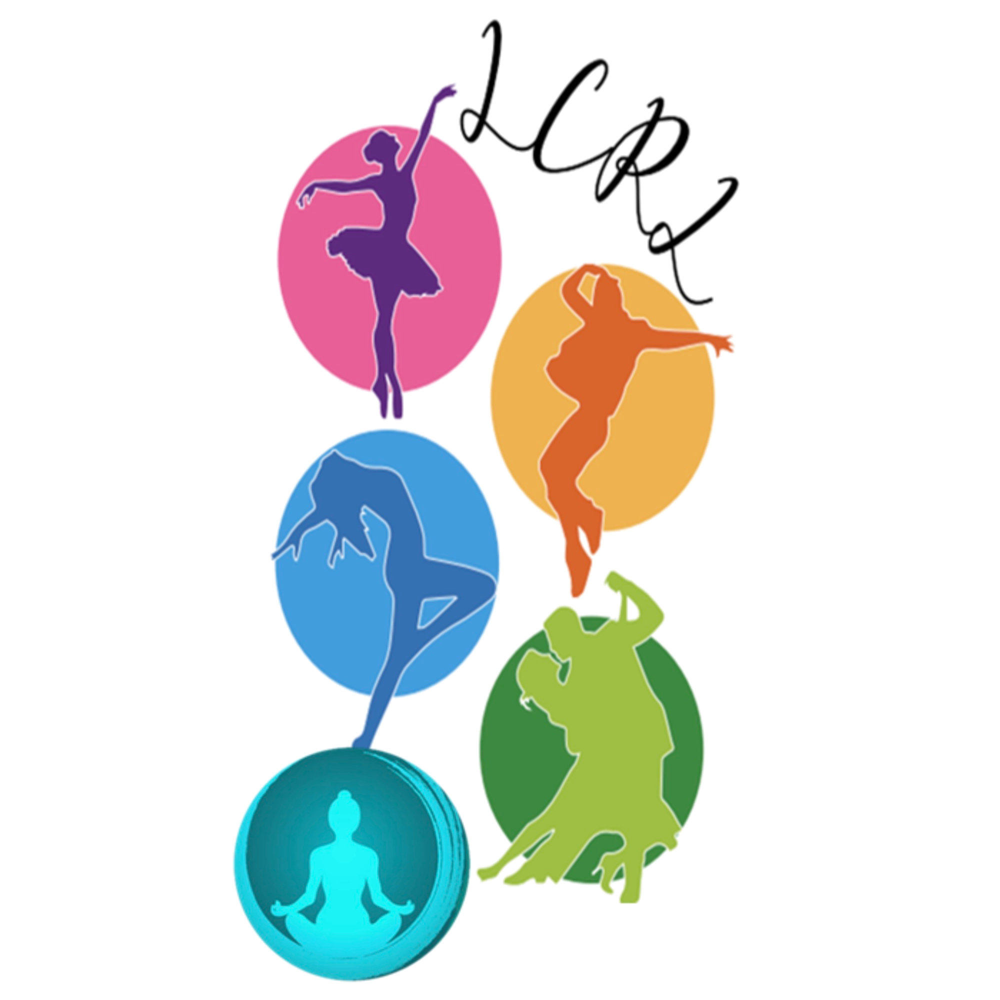

Éveil
Une première découverte de la danse à travers le mouvement, la musique et le jeu. Un cours ludique et adapté aux petits pour développer leur motricité, leur coordination tout en s’amusant !

Les Chaussons Roses LézatoisUne première découverte de la danse à travers le mouvement, la musique et le jeu. Un cours ludique et adapté aux petits pour développer leur motricité, leur coordination tout en s’amusant !
Une discipline élégante qui développe la grâce, la précision et la maîtrise du mouvement, tout en travaillant la posture, la souplesse et la coordination.
Une discipline dynamique et expressive qui mêle énergie, musicalité et créativité. Elle permet de développer la coordination et le rythme.
Un mélange entre sport et danse ! Un cours dynamique et rythmé qui permet de se dépenser, de bouger en musique et surtout de prendre plaisir à danser.
Une discipline dynamique et moderne, inspirée des styles que l’on retrouve dans les clips et sur scène. Elle mêle énergie, musicalité et attitude, pour prendre confiance en soi.
Des chorégraphies en ligne sur des musiques variées. Un cours rythmé qui mêle pas, coordination et plaisir de danser ensemble.
Une pratique douce qui associe mouvements, respiration et relaxation. Un moment pour prendre soin de soi, relâcher les tensions et retrouver équilibre et sérénité.
Une activité basée sur des mouvements précis et contrôlés, qui aide à renforcer le corps, améliorer la posture et travailler la mobilité. Un cours accessible pour prendre soin de son corps en douceur.